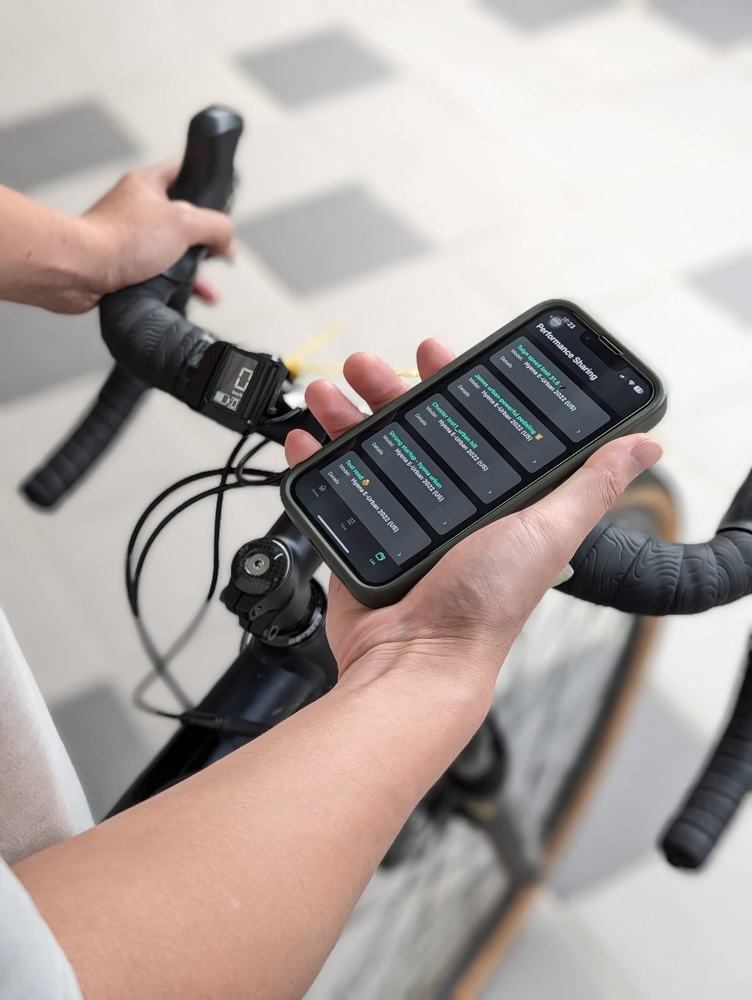
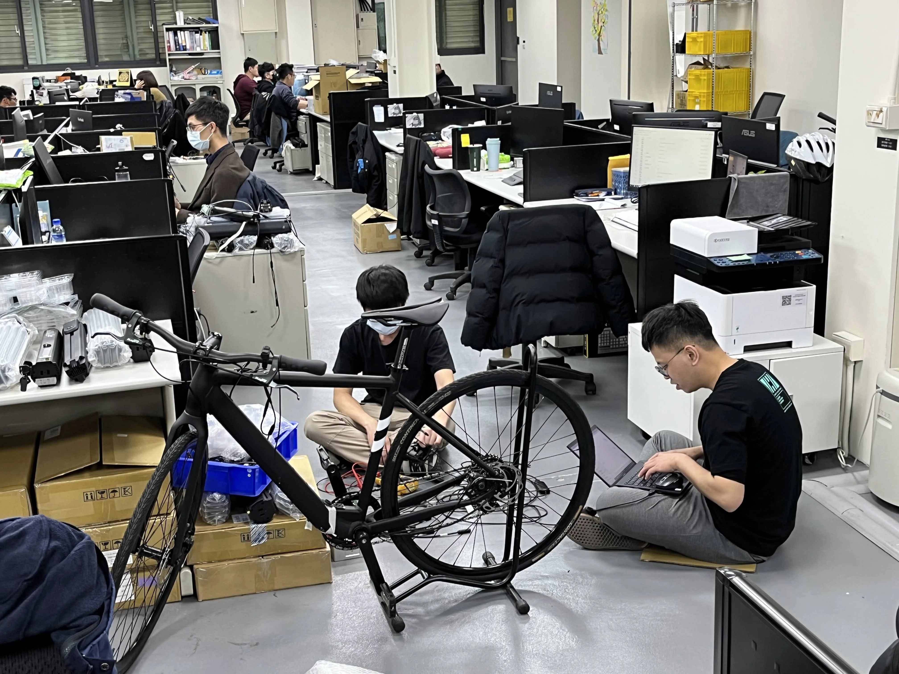
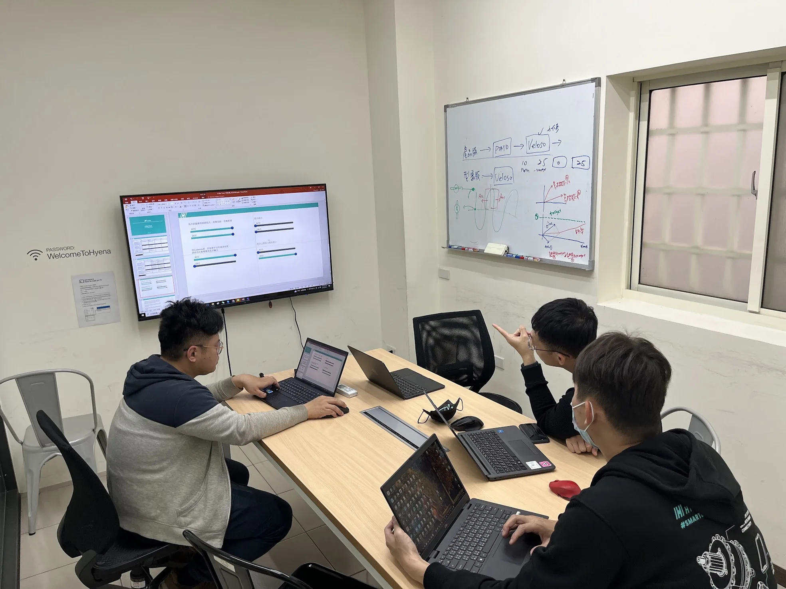
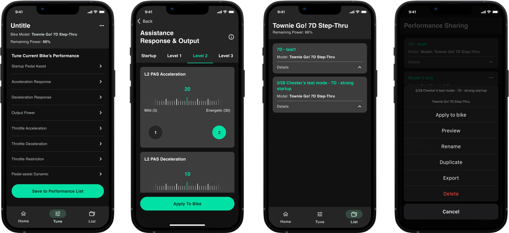
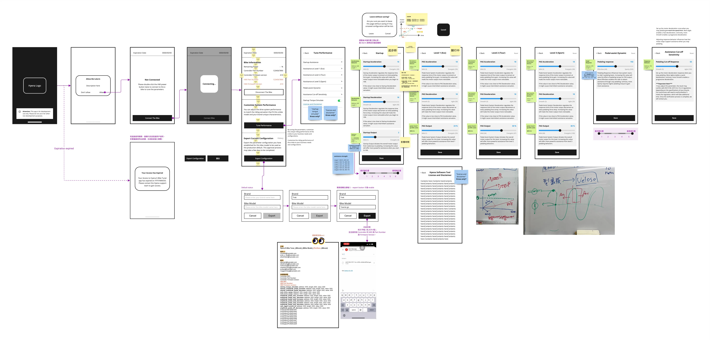
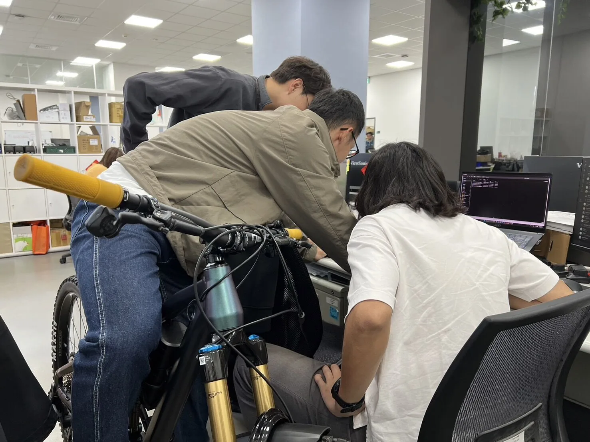
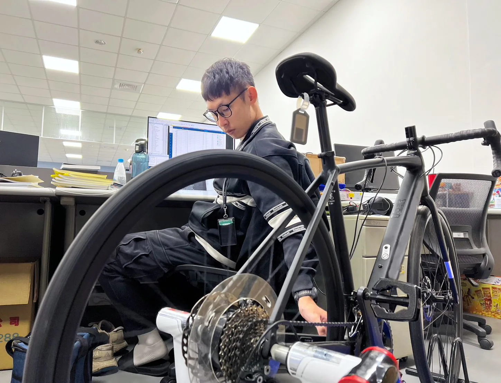

INITIAL ASSUMPTION
Give engineers access to the parameters.
Long-standing collaboration seemed to imply a shared understanding of the tuning controls.
E-BIKE TUNER · PRODUCT DESIGN
I worked with firmware and marketing to turn engineering knowledge into a mobile tuning tool—helping brands understand adjustments and take a more direct role in shaping ride feel.

Tuner lets engineers and brand customers configure the riding performance of e-bikes powered by Hyena drive systems. Customers can adjust ride feel in the app or use configurations provided by Hyena.
There was no dedicated Product Manager. As Product Designer, I helped define the requirements with firmware and marketing, translated technical knowledge into the experience, and developed the wireframes and UI.
02 / OUTCOMES
Brands using Tuner.
Estimated engineer travel costs saved.
Adjust ride feel or use configurations supplied by Hyena.
Brand adoption describes use of Tuner, not new contracts attributed to the app. Travel savings are an estimate.
Brands described how they wanted a bike to feel. Those requests passed through sales and other teams before reaching firmware engineers. Each round of clarification and adjustment added another handoff.
of back-and-forth communication to get tuning adjustments right in the previous process.
PREVIOUS WORKFLOW
Engineers also relied on laptop-based tools for on-site tuning. When remote exchanges could not resolve the request, travel added further time and cost.

We started with a well-known US brand that had worked with Hyena for years. I initially assumed its engineers understood what each parameter controlled and how an adjustment would change the ride.
INITIAL ASSUMPTION
Long-standing collaboration seemed to imply a shared understanding of the tuning controls.
WHAT WE LEARNED
The customer's engineers did not fully understand each parameter's effects. They also wanted to save parameter sets and compare different riding configurations.
This shifted the design focus toward explaining adjustments and supporting configuration comparison.
I interviewed firmware engineers about their past tuning work and actual operating practices. Together, we clarified what each parameter meant, what it affected, and its adjustable range. This gave me a technical basis for defining the requirements and designing the experience.
KNOWLEDGE TO TRANSLATE INTO THE EXPERIENCE

The customer's need extended beyond editing individual values: they wanted to retain parameter sets and compare riding configurations. I brought this need into the product requirements, so the design addressed how customers evaluate ride feel across different setups.

Tuner gives brands two ways to explore ride feel: adjust it themselves or use a configuration provided by Hyena. This also gives sales a practical way to introduce the riding experience when working with prospective brand customers.
CUSTOMER-LED
Explore ride feel directly through the app.
HYENA-PROVIDED
Experience the setup Hyena has prepared.
Without a dedicated PM, product definition emerged through collaboration with firmware and marketing. My contribution connected the engineering details and customer needs to a reviewable design.
Interview firmware engineers about tuning practices and parameter behavior.
Clarify requirements with firmware and marketing.
Propose the experience and review it with the team.
Develop the UI once the wireframes are aligned.



This project changed how I approach expert tools. Even engineers at a long-standing partner may need help connecting a technical parameter with its practical effect.
My value was in uncovering that gap, learning the tuning domain from firmware engineers, and translating it into requirements and designs the teams could develop together.
← Back to selected work